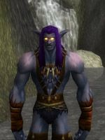

Phalenopsis
Age : 142
Sexe : Homme
Race : Elfe
Faction : Alliance
Formation : Druide
Description :
J’étais alors âgé de 137 ans, très jeune pour un elfe de la nuit. Ma mère était une des sentinelles d’Auberdine veillant à la tranquillité de notre petite ville. J’ai été élevé dans la tradition guerrière alors que ma petite sœur passait son temps à disparaître. Je voulais à l’époque devenir le premier mâle à être sentinelle. J’étais proche de le devenir lorsque des démons nous envahirent.
Les combats furent durs et sanglants. Mon apprentissage de combattant et le prestige de Lys (ma mère) me valurent de protéger les enfants et les non-combattants lors de leur retraite, malgré ma toute juste sortie de l’adolescence. Une fois ceux-ci mis à l’abri, je retournais sur les lieux du combat pour découvrir que la victoire avait été acquise au prix de trop nombreuses vies, dont celle de ma mère…
A mon arrivée sur place, je n’ai pas le temps de pleurer sa disparition, je fus envoyé en patrouille. Là, je fis usage des talents qu’elle m’avait appris lors d’escarmouches sans importance. Ces victoires facilement gagnées flattèrent mon ego de jeune mâle et j’en oubliais les règles de la survie. Je me jetais à bras le corps dans ces combats, sans aucune peur pour ma vie.
J’étais là lors de la bataille du mont Hyjal. Je faisais parti d’un groupe dont le but était de faire diversion. Mon amour du combat et des victoires nous mena à notre perte. Sur mon insistance, nous attaquâmes trop rapidement, sans assez de préparation, une position de démons largement supérieurs en nombre et en puissance. Mon épée faisait des ravages mais mon corps s’ornait de blessures. Mes compagnons combattaient vaillement mais nous n’étions pas assez forts.
Quel présomptueux j’étais ! Le sang, le fracas des armes, les cris de mes amis et les hurlements des démons ! Tout cela hantera à jamais mes rêves. Tout comme la griffe qui me déchira l’abdomen. Je tombais à genoux, essayant de maintenir mes tripes et mes boyaux en moi. Mon dos toucha le sol puis Elinia s’effondra sur mon corps, mortellement blessée. Je ne voyais plus rien, mon visage était couvert de son sang, elle qui avait été la fidèle amie de ma mère, elle me sauva la vie de sa mort. Je sombrais dans l’inconscience…
Lorsque je revins à moi, le calme était revenu. Elinia pesait sur mon ventre, j’entendais les oiseaux chanter. Lorsque j’essayais de bouger mon bras, la douleur fut si forte que je défaillis encore une fois…
Des voix, un poids ôté de mon corps, une douleur vive. Je m’entends gémir comme si mon corps refuse à mon âme cette tranquillité éternelle.
« Lui, il est vivant ! » C’est tout ce que je compris avant de sombrer à nouveau.
Plus tard, je me réveillais sous le ciel étoilé. Je sentais une présence apaisante près de moi, des bandages maintenaient ma blessure. On m’offrait un bol : j’aspirais le liquide goulûment même si chaque respiration me faisait horriblement souffrir. Puis, je retombais dans un abîme sans fond…
Je ne sais combien de temps je suis resté entre la vie et la mort. Je fis ainsi la connaissance de « Pelturas Withemoon » : il m’a soigné comme si j’étais son fils, comme si j’étais important. Lors de mes rares moments de lucidité, je revoyais le massacre de mes compagnons, tous morts par ma faute. Au bout d’un temps, je pu me tenir assis, puis marcher.
Pelturas me dit alors qu’il ne pouvait plus rien pour moi, que mon corps était guéri. Il m’apprit aussi que les Druides étaient bel et bien réveillés, que la légion avait été vaincue mais non sans avoir corrompue notre si belle terre. Il m’indiqua où trouver les druides, comment aller à Reflet-de-Lune et m’informa que eux pourraient peut-être soigner mon âme. Il voulut me redonner mon épée, mais je lui laissais en souvenir, je ne voulais plus être « celui-par-qui-la-mort-arriva ».
C’est ainsi que je me mis en route, un bâton de marche à la main et un sac sur le dos. Les Druides de Reflet-de-Lune me comprirent et me laissèrent vivre avec aux. Ce sont eux tous, aussi bien Elfes que Taurens, qui me révélèrent le chemin de la nature que l’oiseau m’avait montré aux portes de la mort. En dépit de mon passé, ou à cause de lui, je suis devenu un « théro-shan », un druide ours, un combattant de la nature.
Plus d'infos sur Phalenopsis >>>Lire les 49 récits de Phalenopsis >>>